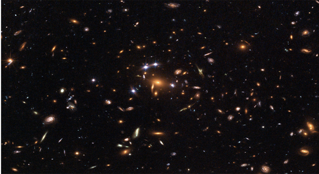
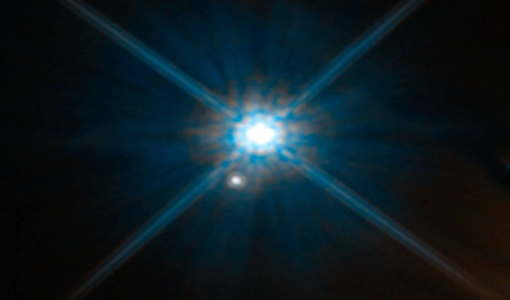
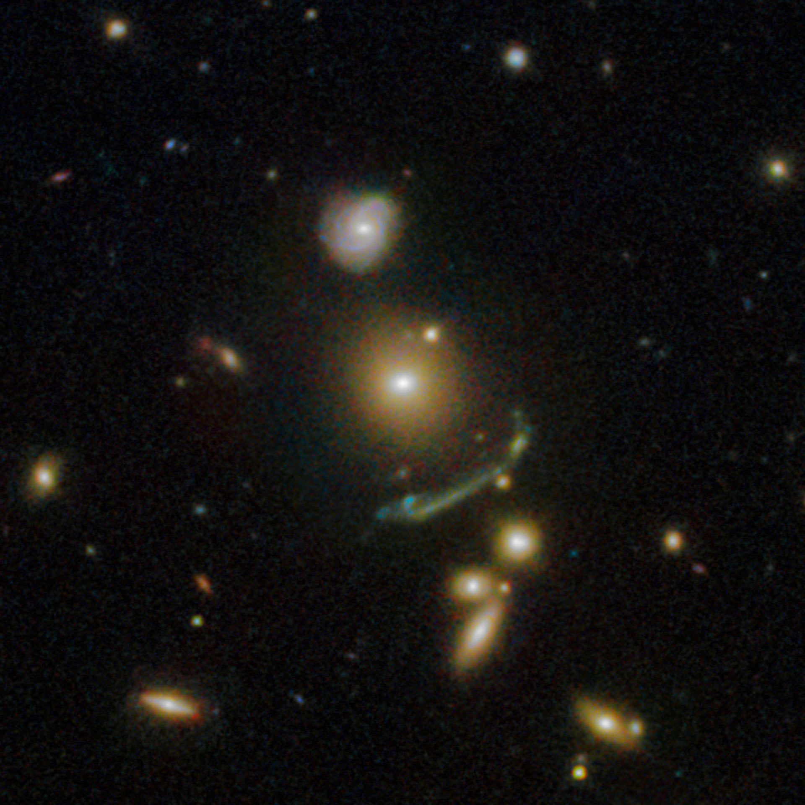
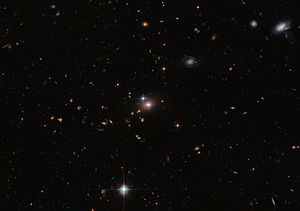
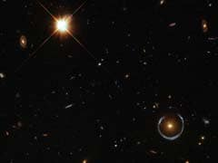
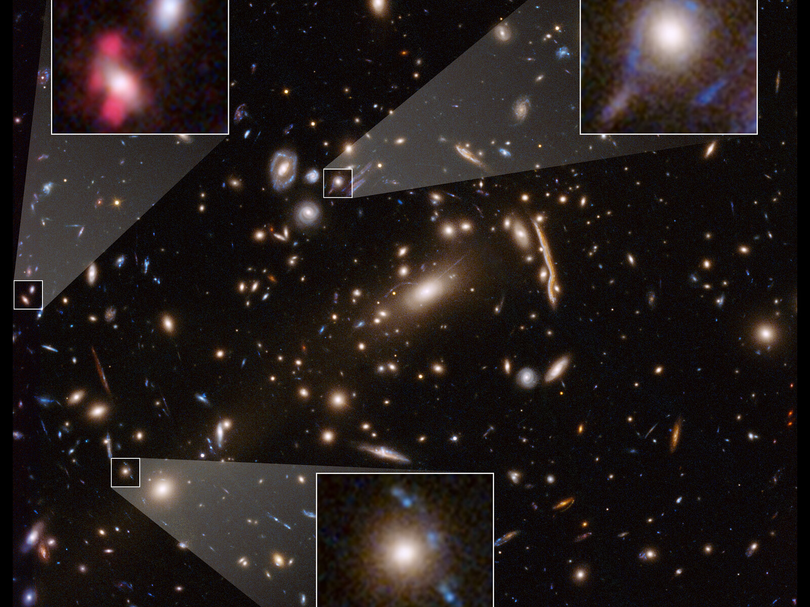

“Gravitational lensing by a neutron star is so strong that a neutron can see its own back!” — Let’s peep through a natural, gigantic magnifying glass.
The discovery of Gravitational Lensing has been revolutionary for the field of Science. First up—What is it exactly?
Gravitational lensing occurs when a huge amount of matter, like a cluster of galaxies, creates a gravitational field that distorts and magnifies the light from distant galaxies that are behind it but in the same line of sight. The effect is like looking through a giant magnifying glass.
The first gravitational lens was discovered in 1979, when two quasars were discovered very close to each other in the sky and with similar distances and spectra. The two quasars were actually the same object whose light had been split into two paths by the gravitational influence of an intervening galaxy.
Smaller objects, like individual stars, can also act as gravitational lenses when they pass in front of more distant stars. For a few days or weeks, light from the more distant star temporarily appears brighter because it is magnified by the gravity of the closer object, a phenomenon known as gravitational microlensing.
The significance of Gravitational Lensing is that it probes the distribution of matter in galaxies and clusters of galaxies, and enables observations of the distant universe. Strong gravitational lensing allows us to improve the angular resolution of current and future telescopes and eliminates the need for absolute astrometry. Gravitational lenses induce time delays and produce multiple images of sources.
Gravitational lensing not only distorts the image of a background galaxy, it can amplify its light. For example, looking through a lensing galaxy cluster, The Hubble Space Telescope can see fainter and more distant galaxies than otherwise possible.


Angular Einstein Radius gives us an appropriate scale for the angular deflection expected from a given lens:
\[ \theta_E = \sqrt{\dfrac{4GM}{c^2} \dfrac{D_{LS}}{D_L D_S}} \]
\(G= \text{Universal Gravitational Constant}\)
\(M = \text{Mass of spherically symmetric lens}\)
\(c= \text{Velocity of light in vacuum}\)
\(D_L = \text{Angular Diameter Distance of lens from observer}\)
\(D_S = \text{Angular Diameter Distance of source from observer}\)
\(D_{LS} = \text{Angular Diameter Distance between the two}\)
If the lens is roughly halfway to the source, then the Einstein radius (which, is in radians and thus dimensionless) is approximately the square root of the ratio of the Schwarzschild radius \((R = \dfrac{2GM}{c^2} ; \; \text{this is the radius of a non-spinning black hole with mass } M)\) to the distance the lens.
Observations:
- Giant Luminous Arcs: This phenomenon was first discovered in 1986 by Lynds and Petrosian: magnified, distorted and strongly elongated images of background galaxies which happened to lie behind foreground clusters of galaxies.

- Multiply-imaged quasars: In 1979, the double quasar ‘Q0957+561’ was discovered through Gravitational Lensing. Initially, it was unclear whether there were two quasars really present or whether it was simply an optical illusion. But intensive observations soon confirmed the almost identical spectra. The intervening “lensing” galaxy was found, and the “supporting” cluster was identified as well. Later very similar light curves of the two images confirmed this system beyond any doubt as a bonafide gravitational lens.

- Einstein rings: The simplest type of gravitational lensing occurs when there is a single concentration of matter at the center, such as the dense core of a galaxy. The light of a distant galaxy is redirected around this core, often producing multiple images of the background galaxy. When the lensing approaches perfect symmetry, a complete or almost-complete circle of light is produced, called an Einstein ring. Hubble observations have helped to greatly increase the number of Einstein rings known to astronomers.

- Dark Matter: The lensed images also act as probes of the matter distribution in the galaxy cluster. The results indicate that most of the matter in a galaxy cluster is not in the visible galaxies or hot gas around them and does not emit light, and is thus called dark matter. The distribution of lensed images reflects the distribution of all matter, both visible and dark. Hubble’s images of gravitational lensing have been used to create maps of dark matter in galaxy clusters.

Einstein worked out the equations for his general theory of relativity and realized that massive objects caused a distortion in space-time.
Imagine setting a large object in the center of a trampoline. The object would press down into the fabric, causing it to dimple. If you then attempt to roll a marble around the edge of the trampoline, the marble would spiral inward toward the body, pulled in much the same way that the gravity of a planet pulls at rocks in space.
According to Einstein’s general theory of relativity, time and space are fused together in a quantity known as spacetime. Within this theory, massive objects cause spacetime to curve, and gravity is simply the curvature of spacetime. Light bends around a massive object, such as a black hole, causing it to act as a lens for the things that lie behind it.
Fundamentally, it just acts like classical geometric optics. Curved spacetime causes light bundles to deflect, and also to shear and expand. The result is that a background light source can have its apparent position, shape, and flux changed by a foreground gravitational lens.
The surface brightness of a lensed object, however, is not changed, because the light goes from flat spacetime to flat spacetime after going through the lens, and the surface brightness is altered only by red shifts.
Light is neither created nor destroyed by lensing, just redistributed…
Reference:
Gravitational Lensing- A. Abdo, Department of Physics and Astronomy, Michigan State University, East Lansing, Michigan, 48823
Hubble Captures a “Five-Star” Rated Gravitational Lens (hubblesite.org)